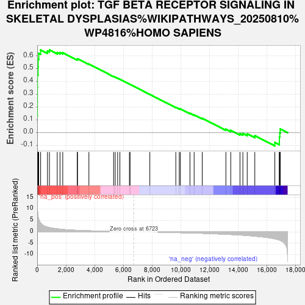
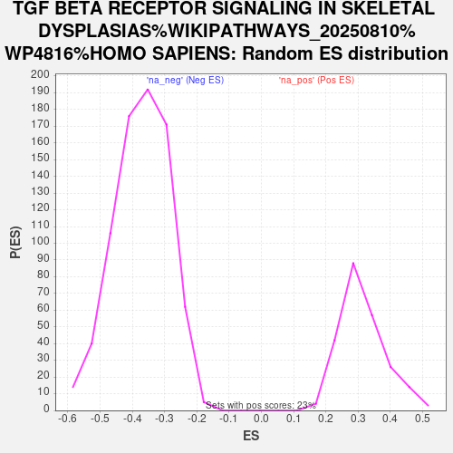

| Dataset | gene_ranks |
| Phenotype | NoPhenotypeAvailable |
| Upregulated in class | na_pos |
| GeneSet | TGF BETA RECEPTOR SIGNALING IN SKELETAL DYSPLASIAS%WIKIPATHWAYS_20250810%WP4816%HOMO SAPIENS |
| Enrichment Score (ES) | 0.6467067 |
| Normalized Enrichment Score (NES) | 2.0609446 |
| Nominal p-value | 0.0 |
| FDR q-value | 0.005199881 |
| FWER p-Value | 0.13 |

| SYMBOL | RANK IN GENE LIST | RANK METRIC SCORE | RUNNING ES | CORE ENRICHMENT | |
|---|---|---|---|---|---|
| 1 | SMAD6 | 0 | 14.930 | 0.1313 | Yes |
| 2 | SMAD9 | 8 | 12.791 | 0.2434 | Yes |
| 3 | NOG | 9 | 12.570 | 0.3540 | Yes |
| 4 | BAMBI | 12 | 11.033 | 0.4509 | Yes |
| 5 | SKIL | 54 | 7.299 | 0.5127 | Yes |
| 6 | LTBP1 | 63 | 6.930 | 0.5732 | Yes |
| 7 | ENG | 107 | 5.632 | 0.6203 | Yes |
| 8 | FBN1 | 239 | 3.858 | 0.6467 | Yes |
| 9 | TGFBR1 | 715 | 2.095 | 0.6379 | No |
| 10 | RUNX2 | 852 | 1.876 | 0.6466 | No |
| 11 | SMAD1 | 1397 | 1.331 | 0.6270 | No |
| 12 | LEFTY2 | 1589 | 1.195 | 0.6266 | No |
| 13 | MAPK9 | 1782 | 1.076 | 0.6250 | No |
| 14 | FOS | 2790 | 0.674 | 0.5732 | No |
| 15 | CREBBP | 2811 | 0.670 | 0.5779 | No |
| 16 | LEF1 | 3605 | 0.472 | 0.5365 | No |
| 17 | ZNF423 | 5328 | 0.171 | 0.4392 | No |
| 18 | CTNNB1 | 5440 | 0.156 | 0.4342 | No |
| 19 | LIF | 5611 | 0.131 | 0.4256 | No |
| 20 | EP300 | 5766 | 0.112 | 0.4177 | No |
| 21 | SMAD4 | 6431 | 0.030 | 0.3799 | No |
| 22 | STAT1 | 6475 | 0.026 | 0.3777 | No |
| 23 | SKI | 7854 | -0.073 | 0.2992 | No |
| 24 | STAT3 | 9665 | -0.310 | 0.1980 | No |
| 25 | ZFYVE9 | 9907 | -0.345 | 0.1872 | No |
| 26 | EGF | 9985 | -0.358 | 0.1860 | No |
| 27 | SMAD2 | 10652 | -0.477 | 0.1519 | No |
| 28 | THBS1 | 10943 | -0.515 | 0.1398 | No |
| 29 | BMP4 | 11508 | -0.624 | 0.1129 | No |
| 30 | FKBP1A | 13157 | -1.050 | 0.0276 | No |
| 31 | NFKB1 | 13497 | -1.154 | 0.0183 | No |
| 32 | ZEB2 | 14140 | -1.365 | -0.0066 | No |
| 33 | TGFB1 | 14341 | -1.437 | -0.0054 | No |
| 34 | MAPK3 | 14645 | -1.585 | -0.0088 | No |
| 35 | JAK1 | 15175 | -1.866 | -0.0228 | No |
| 36 | HRAS | 16571 | -3.028 | -0.0762 | No |
| 37 | TGFBR3 | 16887 | -3.558 | -0.0630 | No |
| 38 | TGIF1 | 16889 | -3.569 | -0.0317 | No |
| 39 | JUN | 16919 | -3.631 | -0.0014 | No |
| 40 | ADAMTSL2 | 16948 | -3.691 | 0.0294 | No |
